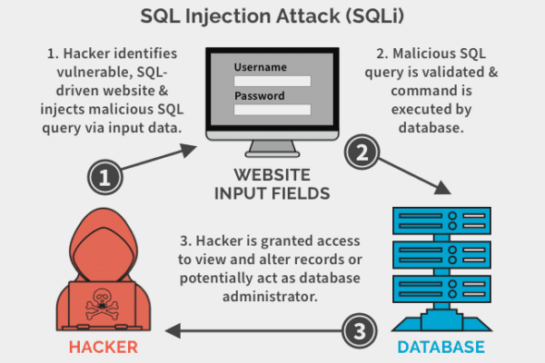
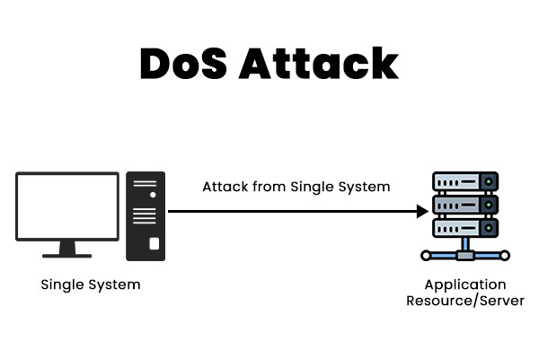
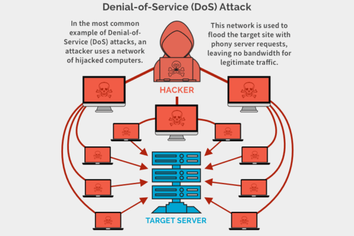

Welcome to Cyberattacks, These are much larger threats like DDoS attacks, SQL Injection, etc. These threats aren't usually targetted to normal users, but rather people who have websites, web servers, etc.
Types of Cyberattacks
1. SQL Injection

SQL Injection Attacks is when an attacker attempts to abuse databases by typing malicious code into a form, like a Login Screen. If the code validates the malicious coded typed in, the attacker can break databases, delete data, steal it, etc.
How do we avoid it? One of the Methods is to try to limit what characters a user can use (for their username and/or password.)
2. DoS Attacks

DoS Attacks is when an attacker's system sends a spam of requests or traffic to websites, networks & other online services.
How do we avoid it? implement measures like traffic filtering, rate limiting, and using a Content Delivery Network (CDN) for better distribution.
3. DDoS Attacks

Worms is a form of malware that specializes in infecting Systems & spreading quickly, Stealing Data on the way.
How do we avoid it? Learning to avoid DoS Attacks can also help you avoid DDoS Attacks aswell.